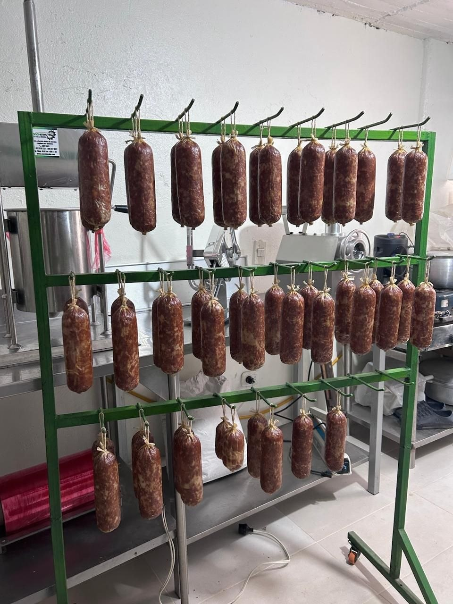
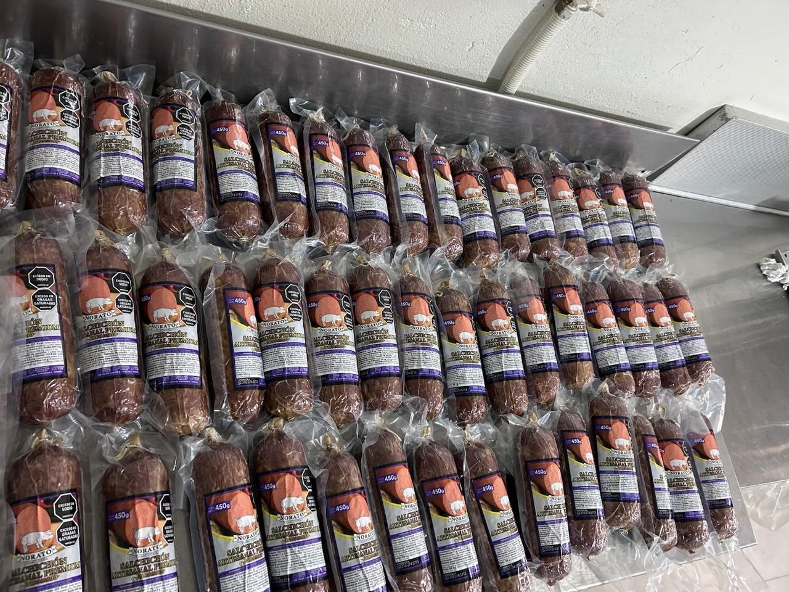

03 · fuego y encuentro
Cervecero
ahumado.
Calor, leña y ganas de compartir. Una variedad que convierte cualquier tarde en una mesa con historia y sabor a brasa.
Pedir Cervecero por WhatsApp ↗La experiencia
El humo abre
la conversación.
Cervecero ahumado tiene el pulso de una tarde larga: carácter tostado, notas de madera curada y ese acompañamiento robusto que pide otra ronda bien fría.
Ámbar · cálido · ahumado
Para pan crujiente, cerveza fría artesanal, tabla al centro y amigos que llegan sin avisar.
Del ahumadero a la mesa
La leña y el tiempo.


Elaboración tradicional en pequeños lotes, respetando el tiempo de oteo y ahumado artesanal.
También puedes probar